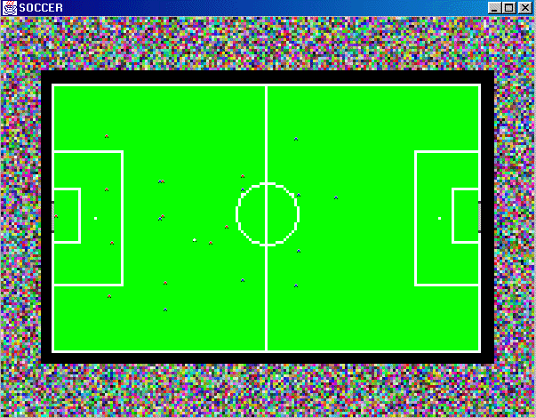

Figure 10. Turtles like soccer too !

This simulation is the most complex one and is not achieved. For now, the turtles' "internal AI" is very poor. But we will try to increase it :).
Although the code is not very explicit, You can try modify the behavior of the players by modifying the following classes: Player, the super class of all soccer players, RedPlayer and BluePlayer that define particular behavior for each team. The ball is also a turtle Ball. The turtles are created in such a way that the red team is composed by the turtles 0 to 10 (blue 11 to 21). This is done by adding the turtles in the right order in the addSimulationAgents of the Launcher (Soccer). A turtle's ID corresponds to the number of invocations of the addTurtle method made by the Launcher.